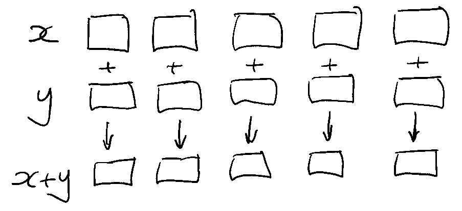
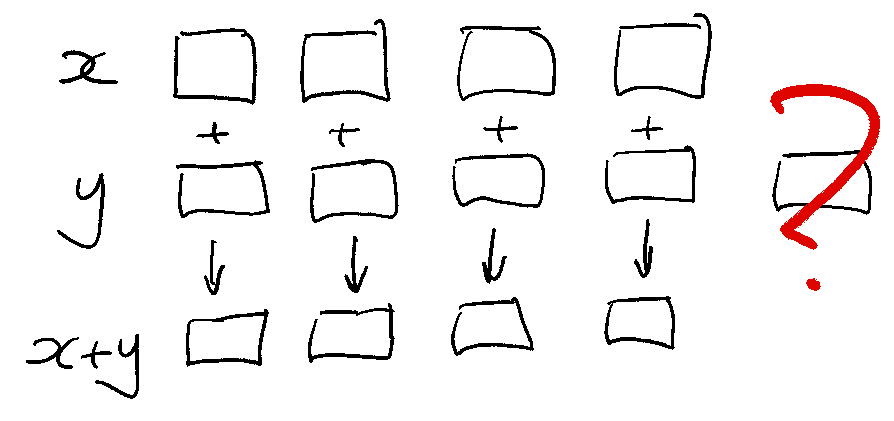
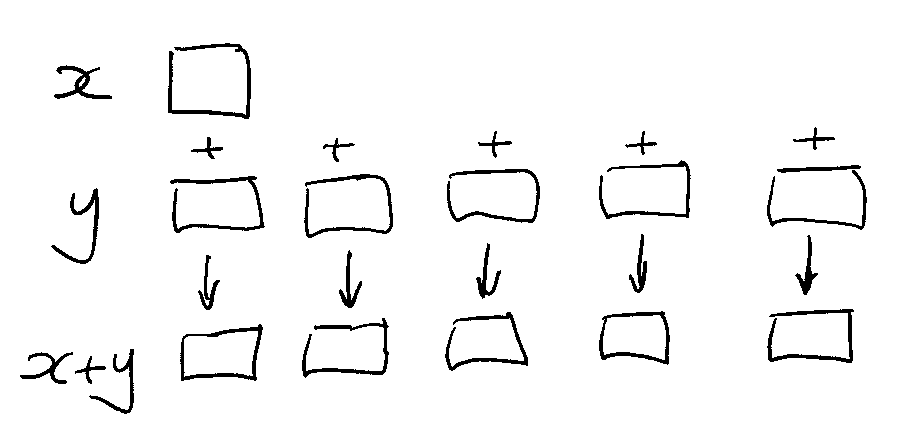
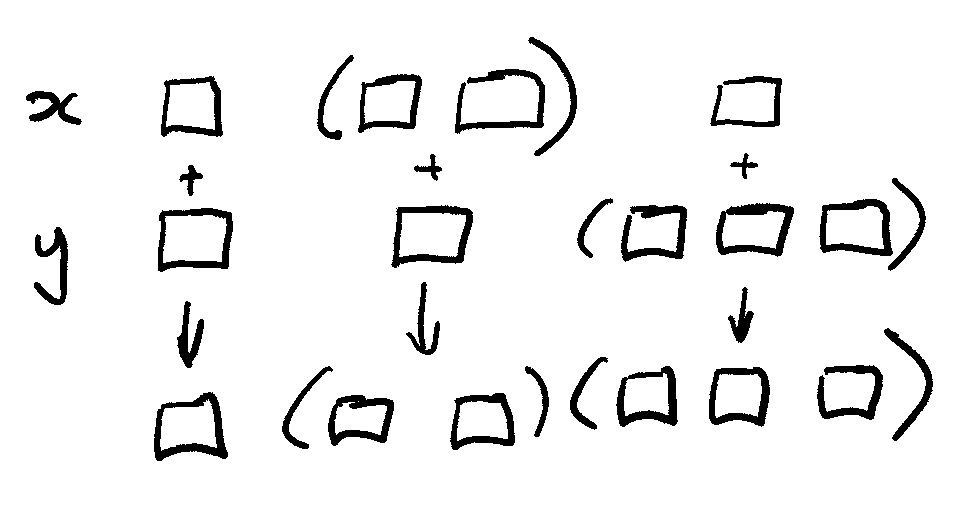
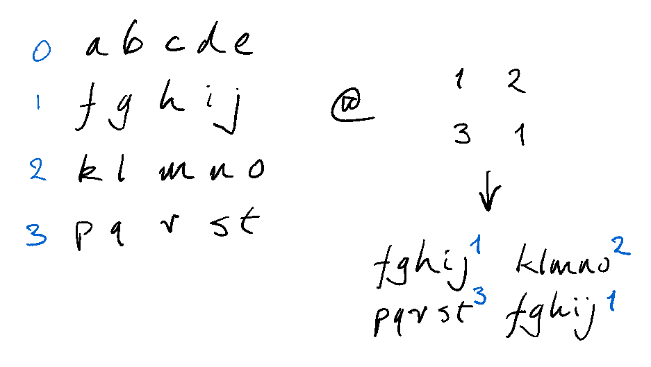
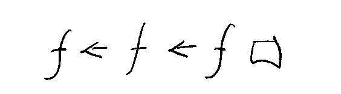

Implicit iteration¶
Before you specify iteration, see whether what you need is already implicit in the operators and keywords
This tutorial as a video presentation
Lists and dictionaries are first-class entities in q, and most operators and keywords iterate through them. This article is about when to leave it to q.
That is, when not to specify iteration.
Recall:
- Map iteration
-
evaluates an expression once on each item in a list or dictionary.
- Accumulator iteration
-
evaluates an expression successively: the result of one evaluation becomes an argument of the next.
Implicit map iterations¶
The simplest and most common implicit map iteration is pairwise: between corresponding list items.

q)10 100 1000 * (1 2 3;4 5 6;7 8)
10 20 30
400 500 600
7000 8000

q)10 100 1000 * (1 2 3;4 5 6)
'length
[0] 10 100 1000 * (1 2 3;4 5 6)
^
Scalar extension¶
Unless! If one of the operands is an atom, scalar extension pairs it with every list item.

q)5 < 1 2 3 4 5 6 7 8
00000111b
q)"f" < ("abc";"def";"gh")
000b
000b
11b
Atomic iteration¶
Many operators have atomic iteration: they iterate recursively, pairwise and with scalar extension, until they find the atoms in a list.

q)1 4 7 < (1 2 3;4 5 6;7 8)
011b
011b
01b
q)(1;2 3 4; 7) < (1 2 3;4 5 6;7 8)
011b
111b
01b
q)(1;2 3 4;(5 6 7;8)) < (1 2 3;4 5 6;7 8)
011b
111b
(110b;0b)
q)cos (1 2 3; 4 5 6)
0.5403023 -0.4161468 -0.9899925
-0.6536436 0.2836622 0.9601703
q)lower("THE";("Quick";"Brown");"FOX")
"the"
("quick";"brown")
"fox"
4 < (1;2 3 4;(5 6 7;8))
0b
000b
(111b;1b)
within is an ascending pair of sortable type.
But in its left domain, within is atomic.
q)2 3 4 within 3 6
011b
q)(2 3 4;(5; 6 7;8)) within 3 6
0 1 1
1b 10b 0b
List iteration¶
List iteration is through list items only – not atomic.
The like keyword has list iteration in its left domain.
q)`quick like "qu?ck"
1b
q)`quick`quack`quark like "qu?ck" / list iteration
110b
q)(`quick;`quack`quark) like "qu?ck" / but not atomic
'type
[0] (`quick;`quack`quark) like "qu?ck"
^
Simple visualizations¶
Even a simple visual display can be useful. Here are sines of the first twenty positive integers, tested to see which of them is greater than 0.5.
q).5 < sin 1 + til 20
11000011000001100001b
We can take that boolean vector and use it to index a short string, getting us a simple visual display.
And, as you probably know, Index At @ can be elided and replaced with prefix notation.
q)".#" @ .5 < sin 1 + til 20
"##....##.....##....#"
q)".#" .5 < sin 1 + til 20
"##....##.....##....#"
Index At is atomic in its right domain; that is, right-atomic.
Here we’ll index a string with an integer vector and we’ll get a string result.
q)" -|+" @ 0 3 1 1 1 3 0
" +---+ "
q)" -|+" @ (0 3 1 1 1 3 0;0 2 0 0 0 2 0)
" +---+ "
" | | "
q)(0 3 1 1 1 3 0;0 2 0 0 0 2 0) @ 0 1 1 1 0
0 3 1 1 1 3 0
0 2 0 0 0 2 0
0 2 0 0 0 2 0
0 2 0 0 0 2 0
0 3 1 1 1 3 0
q)" -|+" @(0 3 1 1 1 3 0;0 2 0 0 0 2 0) @ 0 1 1 1 0
" +---+ "
" | | "
" | | "
" | | "
" +---+ "
q)show L:("the";"quick";"brown";"fox")
"the"
"quick"
"brown"
"fox"
q)(1 3;2 0)
1 3
2 0
q)L@(1 3;2 0)
"quick" "fox"
"brown" "the"

q)show q:4 5#.Q.a
"abcde"
"fghij"
"klmno"
"pqrst"
q)q @ (1 2;3 1) / Index At: right-atomic
"fghij" "klmno"
"pqrst" "fghij"
q)q . (1 2;3 1) / Index: list iteration on the right
"ig"
"nl"
q)deltas 1 5 0 9 5 2
1 4 -5 9 -4 -3
q)ratios 2 3 4 5
2 1.5 1.333333 1.25
Exercise 1¶
sensors.txt contains (24) hourly sensor readings over a 12-day period.
Sensor readings are in the range 0-9.
$ wget https://code.kx.com/download/learn/iteration/sensors.txt
--2022-01-03 11:27:18-- https://code.kx.com/download/learn/iteration/sensors.txt
Resolving code.kx.com (code.kx.com)... 74.50.49.235
Connecting to code.kx.com (code.kx.com)|74.50.49.235|:443... connected.
HTTP request sent, awaiting response... 200 OK
Length: 300 [text/plain]
Saving to: ‘sensors.txt’
sensors.txt 100%[===================>] 300 --.-KB/s in 0s
2022-01-03 11:27:19 (143 MB/s) - ‘sensors.txt’ saved [300/300]
q)show s:read0`:sensors.txt
"030557246251157265736086"
"757251109999993270188377"
"776439448625126896347568"
"116491158137137589031187"
"855938799541699262946623"
"104948806186867057936025"
"328964479858696484945053"
"861596102999933729145653"
"623589072102430497578780"
"240663439999997746246672"
"311551572414272384005263"
"850884046457214232200714"
??? question "a. For each of the 24 hours, on how many days of the period did the sensor reading for that hour fall to zero?"
Converting the sensor readings to numbers is not necessary: they can be compared directly to `"0"`.
```q
q)s="0"
101000000000000000000100b
000000010000000001000000b
000000000000000000000000b
000000000000000000100000b
000000000000000000000000b
010000010000000100000100b
000000000000000000000100b
000000010000000000000000b
000000100010001000000001b
001000000000000000000000b
000000000000000000110000b
001000100000000000011000b
```
The Equals operator has implicit atomic iteration. Here it iterates across the items (rows) of the list `s`. Each item (row) is a character list (string) and Equals continues iterating through the items.
The result of `s="0"` is a boolean matrix of the same shape as `s`.
Summing it simply adds the rows together.
```q
q)sum s="0"
1 1 3 0 0 0 2 3 0 0 1 0 0 0 1 1 0 1 2 2 1 3 0 1i
```
Your maintenance manager gets automated reports printed, but the last report got damaged. She needs your help.
??? question "b. On which days did the sensor readings begin (8, 6, 1, 5, …) and (1, 1, 6, 4, …)?"
We can search the first four columns of `s` for these sequences.
```q
q)s[;til 4]
"0305"
"7572"
"7764"
"1164"
"8559"
"1049"
"3289"
"8615"
"6235"
"2406"
"3115"
"8508"
```
The Find operator has list iteration in both left and right domains.
```q
q)s[;til 4]?("8615";"1164")
7 3
```
Visualizations help us find patterns in datasets. Even simple visualizations can be valuable.
Normal operating levels are in the range (2,7).
??? question "c. Display a simple plot showing when the sensors reported levels outside that range."
The `within` keyword take as right argument a 2-item vector of sortable type.
It has atomic iteration in its left domain.
Keyword `not` is atomic.
```q
q)not s within "27"
101000000001100000000110b
000001111111110001111000b
000001001000100110000001b
110011101100100011101110b
100101011001011000100000b
110101110110100100100100b
001100001101010010100100b
101010110111100001100000b
000011100110001010001011b
001000001111110000000000b
011001000010000010110000b
101110100000010000011010b
```
Because [Index At](https://code.kx.com/q/ref/apply#index-at) is right-atomic we can use the boolean matrix to index a string.
```q
".#"not s within "27"
"#.#........##........##."
".....#########...####..."
".....#..#...#..##......#"
"##..###.##..#...###.###."
"#..#.#.##..#.##...#....."
"##.#.###.##.#..#..#..#.."
"..##....##.#.#..#.#..#.."
"#.#.#.##.####....##....."
"....###..##...#.#...#.##"
"..#.....######.........."
".##..#....#.....#.##...."
"#.###.#......#.....##.#."
```
At level 9 productivity is highest.
??? question "d. Plot when in the period this occurred."
```q
".#"s="9"
"........................"
"........######.........."
".....#..........#......."
"....#............#......"
"...#...##....##...#....."
"...#..............#....."
"...#....#....#....#....."
"....#....####....#......"
".....#..........#......."
"........######.........."
"........................"
"........................"
```
Implicit accumulator iterations¶
Accumulator iterations evaluate some expression successively: the result of one evaluation becomes the argument of the next.

We have already used the sum keyword, which implicitly evaluates Add between successive items of a list.
q)((2+3)+4)+5
14
q)sum 2 3 4 5
14
q)a:`cats`dogs!2 3; b:`cows`sheep!3 4; c:`dogs`sheep!5 6
q)sum (a;b;c)
cats | 2
dogs | 8
cows | 3
sheep| 10
sum is an aggregator: it returns the result of its last evaluation.
sums also iterates successively, but returns the results of all the evaluations.
q)(2;2+3;2+3+4;2+3+4+5)
2 5 9 14
q)sums 2 3 4 5
2 5 9 14
sums is a uniform function.
Notice also that the index of the result corresponds to the number of evaluations: (sums 2 3 4 5)[3] is the result of three additions and (sums 2 3 4 5)[0] is the result of no additions.
Keywords such as mavg and msum combine map iterations (e.g. evaluate on each group of three successive items) with an aggregator which might employ accumulator iteration, e.g. sum.
q)3 msum 1 5 0 9 5 2 2 4 0 5 3 0
1 6 6 14 14 16 9 8 6 9 8 8
Exercise 2¶
Factory productivity is thought to be most affected by the machinery’s fuddling level. An automated process adjusts the fuddling level every 20 minutes to keep it stable; the level resets to zero each midnight.
We have in fudadj.csv a log of the adjustments.
q)\wget -q https://code.kx.com/download/learn/iteration/fudadj.csv
q)read0 `:fudadj.csv / fuddling adjustments
"-1,-1,3,3,2,3,3,3,1,-1,3,0,2,1,2,1,0,-1,3,0,3,1,1,1,3,0,-1,3,-1,2,0,2,1,3,0,0,0,..
"0,1,-1,-1,3,-1,-1,3,1,1,2,1,-1,1,3,2,2,3,2,2,2,3,3,3,2,3,0,3,3,1,2,1,-1,-1,-1,0,..
"1,0,-1,2,3,-1,1,-1,-1,-1,2,3,2,0,0,3,3,2,2,-1,2,-1,2,0,1,2,2,0,0,-1,1,3,-1,1,-1,..
"3,2,2,1,3,-1,-1,-1,1,-1,1,1,0,-1,0,3,-1,0,2,0,2,0,1,2,3,2,1,3,-1,2,-1,1,2,1,-1,3..
"1,0,3,-1,2,3,3,1,1,2,-1,1,1,3,-1,2,2,2,2,2,0,3,-1,1,2,-1,3,0,0,1,2,3,3,0,-1,0,-1..
"2,-1,3,2,1,2,3,3,1,2,-1,-1,1,-1,0,-1,3,2,-1,-1,-1,1,1,2,2,3,0,2,1,0,1,2,3,3,2,-1..
"3,1,-1,2,1,3,-1,1,0,1,2,2,1,3,1,1,1,3,2,-1,-1,1,0,3,3,0,0,2,1,0,2,3,2,2,2,0,-1,-..
"-1,2,-1,-1,1,2,-1,0,2,3,0,2,0,1,2,-1,3,3,1,2,-1,-1,-1,3,3,0,1,1,1,3,2,1,-1,1,2,2..
"-1,3,-1,2,0,0,1,1,1,3,0,2,2,2,2,-1,-1,-1,-1,1,1,3,0,3,-1,1,2,3,0,-1,2,2,2,2,0,2,..
"3,2,-1,-1,0,-1,3,2,0,3,1,0,0,2,3,2,1,1,-1,2,3,-1,3,3,3,-1,1,3,2,1,1,1,2,3,2,1,1,..
"0,2,0,1,-1,3,0,2,-1,2,-1,2,0,0,-1,3,0,3,1,0,2,2,3,-1,2,0,1,1,2,0,2,2,0,0,0,-1,1,..
"2,-1,2,-1,3,0,1,1,0,-1,2,2,3,3,0,0,-1,1,3,-1,1,2,2,3,2,-1,0,2,0,3,0,1,1,0,3,3,-1..
??? question "What were the fuddling levels corresponding to the sensor readings in Exercise 1?"
The file has no column headers, so [Load CSV](https://code.kx.com/q/ref/file-text/#load-csv) returns not a table but a list of columns.
```q
q)show fa:(prd[24 3]#"J";csv)0: read0 `:fudadj.csv / fuddling adjustments
-1 0 1 3 1 2 3 -1 -1 3 0 2
-1 1 0 2 0 -1 1 2 3 2 2 -1
3 -1 -1 2 3 3 -1 -1 -1 -1 0 2
3 -1 2 1 -1 2 2 -1 2 -1 1 -1
2 3 3 3 2 1 1 1 0 0 -1 3
..
```
That suits us. The 72 rows correspond to 20-minute intervals.
We take cumulative sums across the intervals, and select every third sum to get the hourly levels.
Transposing the result gives us 12×24 fuddling levels.
```q
q)flip sums[fa]@2+3*til 24
1 9 16 18 23 23 29 32 34 38 41 44 44 50 52 54 59 62 65 72 72 76 78 80
0 1 4 8 11 18 24 33 38 45 47 45 50 51 54 55 58 58 57 61 64 68 69 66
0 4 3 7 9 17 20 21 26 25 28 27 28 33 34 34 36 42 46 49 51 55 55 61
7 10 9 10 9 11 15 18 24 28 30 33 35 41 41 43 43 49 51 56 57 57 62 63
4 8 13 15 18 24 28 31 35 36 44 43 45 47 49 55 58 60 64 62 65 67 68 70
4 9 16 16 16 20 17 21 26 29 35 39 42 49 57 59 65 69 73 73 75 74 74 77
3 9 9 14 19 24 24 28 31 34 41 45 46 49 55 57 59 62 68 71 75 77 79 79
0 2 3 8 11 16 18 19 23 28 30 35 36 37 41 41 42 47 54 59 58 59 63 67
1 3 6 11 17 14 15 21 23 25 31 35 41 46 47 51 54 59 63 67 73 77 81 86
4 2 7 11 16 20 24 29 32 38 42 48 51 56 60 67 64 72 75 78 79 82 85 91
2 5 6 9 8 14 17 21 24 27 31 30 32 36 38 39 41 44 42 47 50 50 51 53
3 5 7 10 16 16 19 26 27 32 34 40 39 40 43 51 51 53 57 62 65 63 65 71
```
It is clear that the automatic adjustments are not keeping the fuddling levels stable.
Yet another way q is weird?
If in other languages you are used to specifying iterations, you may at first experience this as an annoying distraction. Besides solving your problem, you also have to learn and keep in mind q’s implicit iterations. You already know how to write iterations. Why now learn this?
The reward is that, as implicit iteration becomes familiar to you, you stop thinking about most of the iterations in your code, which leaves you more mental space for problem solving. (Only when we put on noise-cancelling headphones do we discover how much annoying background noise we had been filtering out.)
As a bonus, many algorithms are startlingly simple to write in q. It’s way cool.
Conclusion¶
That’s it. The big takeaway is that there is a lot of iteration built into the q primitives. It will almost always give you your shortest, fastest code – and the most readable.
Source adapted from the Documentation for kdb+ and q by KX Systems and contributors, used under CC BY 4.0. Attribution, provenance and independence notice.